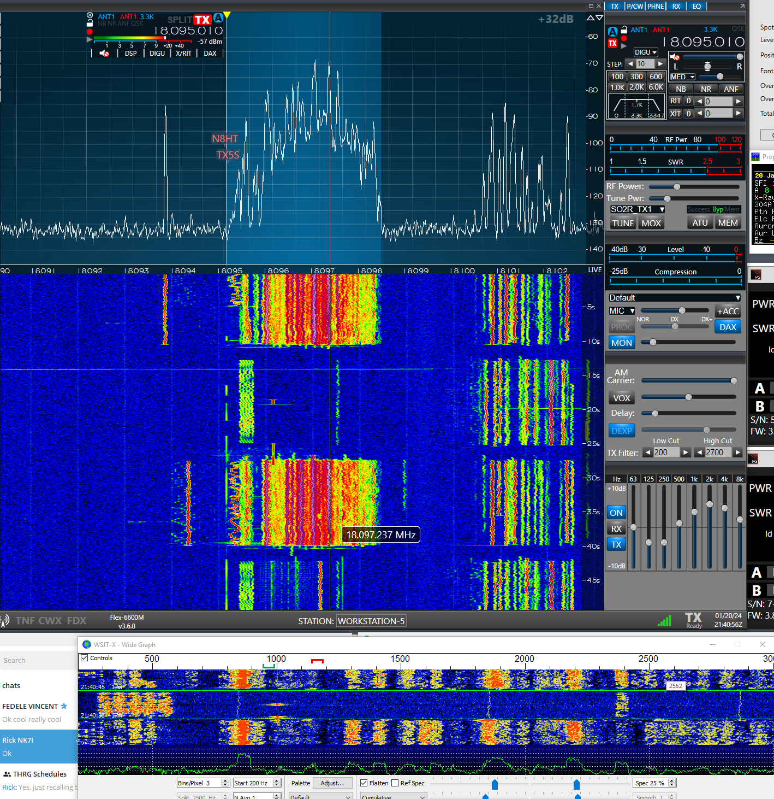

Thanks, that makes sense, I should have thought of that. His signal to me was much stronger compared to reports he was giving out. And I couldn't read a lot of the people calling him that he answered either because it was so crowded.
Paul, W6IBU
-----Original Message----- From: Thomas Liakopoulos <kj7tea@gmail.com> Sent: Jan 20, 2024 1:41 PM To: Paul Booth <wa6ibu@earthlink.net> Cc: <chat@ncdxc.org> Subject: Re: [NCDXC Chat] TX5S 18095 f/h
It appears a lot of the receive signal questions are actually so many people on top of each other. That degrades the S/N that the DX station see's Compare you radio waterfall to the WSJT water fall and you will see WSJT looses a lot with so many people stacked.
73 Tom KJ7TEA

On Sat, Jan 20, 2024 at 1:37 PM Paul Booth via Chat <chat@ncdxc.org> wrote:
That was the longest time I've spent trying an FT8 contact, 2 hours! I know it's in the beginning of the operation and saw lots of club members work him but a couple of questions:
-it's pure F/H, not MHSV right?
-are they filtering on signal strength or distance? I noticed most of his reports were weak.